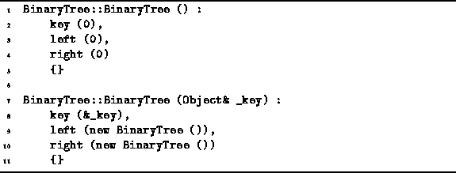

Data Structures and Algorithms
with Object-Oriented Design Patterns in C++
Data Structures and Algorithms
with Object-Oriented Design Patterns in C++
Program  defines the two BinaryTree class
constructors.
The default constructor, the constructor which takes no arguments,
initializes the binary tree as an empty tree.
It simply sets all three member variables to zero.
Clearly the running time of this constructor is O(1).
defines the two BinaryTree class
constructors.
The default constructor, the constructor which takes no arguments,
initializes the binary tree as an empty tree.
It simply sets all three member variables to zero.
Clearly the running time of this constructor is O(1).

Program: BinaryTree Class Constructor Definitions
The second constructor takes as its lone argument a reference to an Object class instance. The purpose of this constructor is to create a binary tree with the specified object as its root. Since every binary tree has exactly two subtrees, the constructor creates two empty subtrees an sets the left and right member variables to point at them. The running time of this constructor is also O(1).
 Copyright © 1997 by Bruno R. Preiss, P.Eng. All rights reserved.
Copyright © 1997 by Bruno R. Preiss, P.Eng. All rights reserved.